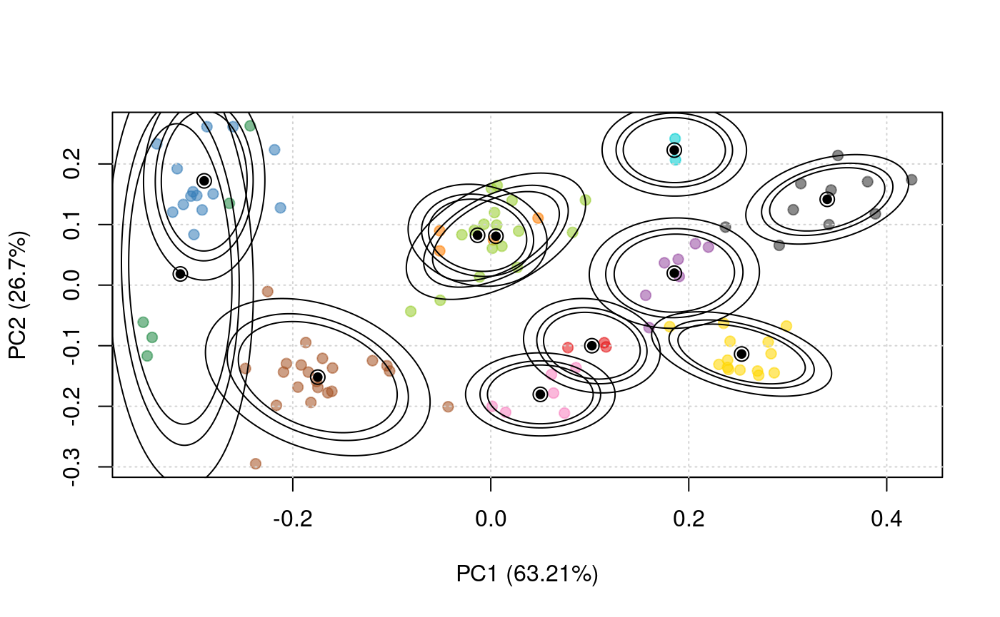

Bayesian Analysis of Spatial Proteomics data using pRoloc
Oliver Crook
Laurent Gatto
Source:vignettes/v03-pRoloc-bayesian.Rmd
v03-pRoloc-bayesian.RmdIntroduction
For an in-depth description of the infrastructure for Bayesian spatial proteomics, please see
A Bayesian Mixture Modelling Approach For Spatial Proteomics Oliver M Crook, Claire M Mulvey, Paul D. W. Kirk, Kathryn S Lilley, Laurent Gatto bioRxiv 282269; doi: https://doi.org/10.1101/282269
Analysis of the spatial sub-cellular distribution of proteins is of vital importance to fully understand context specific protein function. Some proteins can be found with a single location within a cell, but up to half of proteins may reside in multiple locations, can dynamically relocalise, or reside within an unknown functional compartment. These considerations lead to uncertainty in associating a protein to a single location. Currently, mass spectrometry (MS) based spatial proteomics relies on supervised machine learning algorithms to assign proteins to sub-cellular locations based on common gradient profiles. However, such methods fail to quantify uncertainty associated with sub-cellular class assignment. Here we reformulate the framework on which we perform statistical analysis. We propose a Bayesian generative classifier based on Gaussian mixture models to assign proteins probabilistically to sub-cellular niches, thus proteins have a probability distribution over sub-cellular locations, with Bayesian computation performed using the expectation-maximisation (EM) algorithm (coined TAGM-MAP, for maximum a posteriori), as well as Markov-chain Monte-Carlo (coined TAGM-MCMC). Our methodology allows proteome-wide uncertainty quantification, thus adding a further layer to the analysis of spatial proteomics. Our framework is flexible, allowing many different systems to be analysed and reveals new modelling opportunities for spatial proteomics. We find our methods perform competitively with current state-of-the art machine learning methods, whilst simultaneously providing more information. We highlight several examples where classification based on the support vector machine is unable to make any conclusions, while uncertainty quantification using our approach provides biologically intriguing results. To our knowledge this is the first Bayesian model of MS-based spatial proteomics data.
Below, we start by loading packages that are needed to execute the code in this vignette and set the default colour to semi-transparent.
library("pRoloc")
library("pRolocdata")
require("reshape")
require("ggplot2")
require("coda")
setStockcol(NULL)
setStockcol(paste0(getStockcol(), 90))The TAGM-MAP method
We will use a subsest of the tan2009r1 dataset from the pRolocdata to illustrate the TAGM-MAP method
data(tan2009r1)
set.seed(1)
tan2009r1 <- tan2009r1[sample(nrow(tan2009r1), 400), ]The first step is to generate the model parameters using the tagmMapTrain function, that will generate an instance of class MAPParams.
p <- tagmMapTrain(tan2009r1)
p## Object of class "MAPParams"
## Method: MAPThe results of the modelling can be visualised with the plotEllipse function. The outer ellipse contains 99% of the total probability whilst the middle and inner ellipses contain 95% and 90% of the probability respectively. The centres of the clusters are represented by black circumpunct (circled dot).
plotEllipse(tan2009r1, p)
The MAPParams object can now be used to classify the proteins of unknown localisation using tagmPredict.
res <- tagmPredict(tan2009r1, p)The new feature variables that are generated are:
-
tagm.map.allocation: the TAGM-MAP predictions for the most likely protein sub-cellular allocation.
table(fData(res)$tagm.map.allocation)##
## Cytoskeleton ER Golgi Lysosome mitochondrion
## 17 95 24 8 34
## Nucleus Peroxisome PM Proteasome Ribosome 40S
## 25 3 114 19 30
## Ribosome 60S
## 31-
tagm.map.probability: the posterior probability for the protein sub-cellular allocations.
summary(fData(res)$tagm.map.probability)## Min. 1st Qu. Median Mean 3rd Qu. Max.
## 0.0000000 0.0003256 0.0049051 0.2731639 1.0000000 1.0000000-
tagm.map.outlier: the probability for that protein to belong to the outlier component rather than any annotated component.
summary(fData(res)$tagm.map.outlier)## Min. 1st Qu. Median Mean 3rd Qu. Max.
## 0.0000 0.0000 0.9948 0.7266 0.9996 1.0000The TAGM-MCMC method
We will use a subsest of the tan2009r1 dataset from the pRolocdata to illustrate the TAGM-MCMC method
The first step is run two MCMC chains for a few iterations of the algorithm using the tagmMcmcTrain function. This function will generate a object of class MCMCParams. The summary slot of which is currently empty.
library("pRoloc")
p <- tagmMcmcTrain(object = tan2009r1, numIter = 3,
burnin = 1, thin = 1, numChains = 2)
p## Object of class "MCMCParams"
## Method: TAGM.MCMC
## Number of chains: 2Information for each MCMC chain is contained within the chains slot. This information can be accessed manually if need. The function MCMCProcess populates the summary slot of the MCMCParams object
p <- tagmMcmcProcess(p)
p## Object of class "MCMCParams"
## Method: TAGM.MCMC
## Number of chains: 2
## Summary availableThe summary slot has now been populated to include basic summaries of the MCMCChains, such as allocations and localisation probabilities. Protein information can be appended to the feature columns of the MSnSet by using the tagmPredict function, which extracts the required information from the summary slot of the MCMCParams object.
res <- tagmPredict(object = tan2009r1, params = p)One can access new features variables:
-
tagm.mcmc.allocation: the TAGM-MCMC prediction for the most likely protein sub-cellular annotation.
table(fData(res)$tagm.mcmc.allocation)##
## Cytoskeleton ER Golgi Lysosome mitochondrion
## 12 97 25 9 39
## Nucleus Peroxisome PM Proteasome Ribosome 40S
## 25 3 102 28 31
## Ribosome 60S
## 29-
tagm.mcmc.probability: the posterior probability for the protein sub-cellular allocations.
summary(fData(res)$tagm.mcmc.probability)## Min. 1st Qu. Median Mean 3rd Qu. Max.
## 0.3837 0.8739 0.9897 0.9074 1.0000 1.0000As well as other useful summaries of the MCMC methods:
tagm.mcmc.outlierthe posterior probability for the protein to belong to the outlier component.tagm.mcmc.probability.lowerquantileandtagm.mcmc.probability.upperquantileare the lower and upper boundaries to the equi-tailed 95% credible interval oftagm.mcmc.probability.tagm.mcmc.mean.shannona Monte-Carlo averaged shannon entropy, which is a measure of uncertainty in the allocations.
TAGM-MCMC, in details
This section explains how to manually manipulate the MCMC output of the Bayesian model TAGM-MCMC applied to spatial proteomics data [@Crook:2018]. First, we load the MCMC data (as produced by tagmMcmcTrain) to be used and the packages required for analysis.
The tanTagm.rda file is nearly 400MB large and isn’t direcly distributed in a package but can be downloaded from the http://bit.ly/tagm-mcmc google drive to reproduce the following analyses. Alternatively, to avoid manual intervention, the following code chunk downloads the file from an alternative server:
destdir <- tempdir()
destfile <- file.path(destdir, "tanTagm.rda")
download.file("http://proteome.sysbiol.cam.ac.uk/lgatto/files/tanTagm.rda",
destfile)
load(destfile)## Load tanTagm data containing the MCMC analysis, which is assumed to
## be available in the working directory.
load("tanTagm.rda")
tanTagm## Object of class "MCMCParams"
## Method: TAGM.MCMC
## Number of chains: 4We now load the example data for which we performed this Bayesian analysis. This Drosophila embryo spatial proteomics experiment is from [@Tan2009].
data(tan2009r1) ## get data from pRolocdataThe tanTagm data was produce by executing the tagmMcmcTrain function. \(20000\) iterations were performed, automatically discarding \(5000\) iterations for burnin, sub-sampling the chains by \(10\) and running a total of \(4\) chains in parallel. This results in \(4\) chains each with \(1500\) MCMC iterations.
tanTagm <- tagmMcmcTrain(object = tan2009r1,
numIter = 20000,
burnin = 5000,
thin = 10,
numChains = 4)Data exploration and convergence diagnostics
Using parallel chains for analysis allows us to diagnose whether our MCMC algorithm has converged (or not). The number of parallel MCMC chains used in this analysis was 4.
## Get number of chains
nChains <- length(tanTagm@chains)
nChains## [1] 4The following code chunks sets up a manual convegence diagnostic check. We make use of objects and methods in the package coda to peform this analysis [@coda]. We calculate the total number of outliers at each iteration of each chain and if the algorithm has converged this number should be the same (or very similar) across all 4 chains. We can observe this by sight by producing trace plots for each MCMC chain.
## Convergence diagnostic to see if more we need to discard any
## iterations or entire chains.
outlierTotal <- vector("list", length = nChains)
## Compute the number of outliers for each iteration for each chain
for (j in seq_len(nChains)) {
mc <- pRoloc:::chains(tanTagm)[[j]]
outlierTotal[[j]] <- coda::mcmc(colSums(mc@Outlier))
}
## Carefully using coda S3 objects to produce trace plots and histograms
plot(outlierTotal[[1]], col = "blue", main = "Chain 1")
plot of chunk mcmc-outlier
plot(outlierTotal[[2]], col = "red", main = "Chain 2")
plot of chunk mcmc-outlier
plot(outlierTotal[[3]], col = "green", main = "Chain 3")
plot of chunk mcmc-outlier
plot(outlierTotal[[4]], col = "orange", main = "Chain 4")
plot of chunk mcmc-outlier
We can use the coda package to produce summaries of our chains. Here is the coda summary for the first chain.
## all chains average around 360 outliers
summary(outlierTotal[[1]])##
## Iterations = 1:1500
## Thinning interval = 1
## Number of chains = 1
## Sample size per chain = 1500
##
## 1. Empirical mean and standard deviation for each variable,
## plus standard error of the mean:
##
## Mean SD Naive SE Time-series SE
## 357.301 13.864 0.358 0.358
##
## 2. Quantiles for each variable:
##
## 2.5% 25% 50% 75% 97.5%
## 329 348 357 367 384In this case our chains looks very good. They all oscillate around an average of 360 outliers. There is no observed monotonicity in our output. However, for a more rigorous and unbiased analysis of convergence we can calculate the Gelman diagnostics using the coda package [@Gelman:1992,@Brools:1998]. This statistics is often refered to as \(\hat{R}\) or the potential scale reduction factor. The idea of the Gelman diagnostics is to so compare the inter and intra chain variance. The ratio of these quantities should be close to one. The actual statistics computed is more complicated, but we do not go deeper here and a more detailed and in depth discussion can be found in the references. The coda package also reports the \(95\%\) upper confidence interval of the \(\hat{R}\) statistic.
## Can check gelman diagnostic for convergence (values less than <1.05
## are good for convergence)
gelman.diag(outlierTotal) # the Upper C.I. is 1 so mcmc has clearly converged## Potential scale reduction factors:
##
## Point est. Upper C.I.
## [1,] 1 1We can also look at the Gelman diagnostics statistics for pairs of chains.
## We can also check individual pairs of chains for convergence
gelman.diag(outlierTotal[1:2]) # the upper C.I is 1.01## Potential scale reduction factors:
##
## Point est. Upper C.I.
## [1,] 1 1.01gelman.diag(outlierTotal[c(1,3)]) # the upper C.I is 1## Potential scale reduction factors:
##
## Point est. Upper C.I.
## [1,] 1 1gelman.diag(outlierTotal[3:4]) # the upper C.I is 1## Potential scale reduction factors:
##
## Point est. Upper C.I.
## [1,] 1 1Manually manipulating MCMC chains
This section explains how to manually manipulate our MCMC chains.
Discarding entire chains
Here we demonstrate how to discard chains that may not have converged. Including chains that have not converged in downstream analysis is likely to lead to nonsensical results. As an example, we demonstrate how to remove the second chain from our domwnstream analysis.
## Our chains look really good but let us discard chain 2, as an
## example in case we didn't believe it had converged. It would be
## possible to remove more than one chain e.g. to remove 2 and 4 using
## c(2, 4).
removeChain <- 2
newTanMcmc <- tanTagm[seq_len(nChains)[-removeChain]]
## Let check that it looks good
newTanMcmc## Object of class "MCMCParams"
## Method: TAGM.MCMC
## Number of chains: 3length(newTanMcmc) == (nChains - length(removeChain))## [1] TRUE## Let have a look at our first chain
tanChain1 <- pRoloc:::chains(newTanMcmc)[[1]]
tanChain1@n ## Chain has 1500 iterations.## [1] 1500We could repeat the convergence diagnostics of the previous section to check for convergence again.
Discarding iterations from each chain
We are happy that our chains have conveged. Let us recap where our analysis up until this point. We have 3 chains each with 1500 iterations. We now demonstrate how to discard iterations from individual chains, since they may have converged some number of iteration into the analysis. Let us use only the iterations of last half of the remaining three chains. This also speeds up computations, however too few iterations in the further analysis is likely to lead to poor results. We find that using at least \(1000\) iterations for downstream analysis leads to stable results.
## We need to clear this section up with a new function
n <- (tanChain1@n)/2 # Number of iterations to keep 750
K <- tanChain1@K # Number of components
N <- tanChain1@N # Number of Proteins
## Create storage for .MCMCChain
.MCMCChainlist <- vector("list", length = length(newTanMcmc))
for(j in seq_len(length(newTanMcmc))) {
tanChain <- pRoloc:::chains(newTanMcmc)[[j]]
.ComponentParam <- tanChain@ComponentParam # This won't change
## Subset MCMC iterations
retain <- seq.int(n + 1, tanChain@n) # retain 750 samples
## Check correct number of iterations
stopifnot(ncol(tanChain@Component[, retain]) == n) # Second entry is 750
## Subset functions
.Component <- tanChain@Component[, retain]
.ComponentProb <- tanChain@ComponentProb[, retain, ]
.Outlier <- tanChain@Outlier[, retain]
.OutlierProb <- tanChain@OutlierProb[, retain, ]
## We can now create a new object of class MCMCChains
## make MCMCChain object
.MCMCChainlist[[j]] <- pRoloc:::.MCMCChain(n = as.integer(n),
K = K,
N = N,
Component = .Component,
ComponentProb = .ComponentProb,
Outlier = .Outlier,
OutlierProb = .OutlierProb,
ComponentParam = .ComponentParam)
}
## Construct class MCMCChains
.ans <- pRoloc:::.MCMCChains(chains = .MCMCChainlist)
tanTagmparams <- pRoloc:::.MCMCParams(method = "TAGM.MCMC",
chains = .ans,
priors = tanTagm@priors,
summary = pRoloc:::.MCMCSummary())tanTagmParams is now an object of class MCMCParams with 3 chains each with 750 iterations.
## Check tanTagmParams object
pRoloc:::chains(tanTagmparams)[[1]]## Object of class "MCMCChain"
## Number of components: 11
## Number of proteins: 677
## Number of iterations: 750pRoloc:::chains(tanTagmparams)[[2]]## Object of class "MCMCChain"
## Number of components: 11
## Number of proteins: 677
## Number of iterations: 750pRoloc:::chains(tanTagmparams)[[3]]## Object of class "MCMCChain"
## Number of components: 11
## Number of proteins: 677
## Number of iterations: 750Procesing and summarising MCMC results
Populating the summary slot
The summary slot of the tanTagmparams is currently empty, we can now populate the summary slot of tanTagmparams using the tagmMcmcProcess function.
## This will automatically pool chains to produce summary (easy to
## create single summaries by subsetting)
tanTagmparams <- tagmMcmcProcess(tanTagmparams)
## Let look at this object
summary(tanTagmparams@summary@posteriorEstimates)## tagm.allocation tagm.probability tagm.probability.notOutlier
## ER :196 Min. :0.3055 Min. :0.0002031
## PM :192 1st Qu.:0.8439 1st Qu.:0.1712611
## Ribosome 40S : 75 Median :0.9810 Median :0.6001312
## mitochondrion: 61 Mean :0.8927 Mean :0.5278532
## Proteasome : 49 3rd Qu.:0.9980 3rd Qu.:0.8603698
## Ribosome 60S : 32 Max. :1.0000 Max. :0.9982244
## (Other) : 72
## tagm.probability.Outlier tagm.probability.lowerquantile
## Min. :0.001776 Min. :0.001053
## 1st Qu.:0.139630 1st Qu.:0.591425
## Median :0.399869 Median :0.942714
## Mean :0.472147 Mean :0.769211
## 3rd Qu.:0.828739 3rd Qu.:0.995483
## Max. :0.999797 Max. :0.999988
##
## tagm.probability.upperquantile tagm.mean.shannon
## Min. :0.4961 Min. :0.0000254
## 1st Qu.:0.9698 1st Qu.:0.0141329
## Median :0.9959 Median :0.0911157
## Mean :0.9655 Mean :0.2386502
## 3rd Qu.:0.9994 3rd Qu.:0.4050057
## Max. :1.0000 Max. :1.3051988
##For a sanity check, let us re-check the diagnostics. This is re-computed when we excute the tagmMcmcProcess function and located in a diagnostics slot.
## Recomputed diagnostics
tanTagmparams@summary@diagnostics## Point est. Upper C.I.
## outlierTotal 1.00021 1.000274Let us look at a summary of the analysis.
summary(tanTagmparams@summary@tagm.joint)## Cytoskeleton ER Golgi
## Min. :0.0000000 Min. :0.0000 Min. :0.0000000
## 1st Qu.:0.0000000 1st Qu.:0.0000 1st Qu.:0.0000000
## Median :0.0000040 Median :0.0000 Median :0.0000002
## Mean :0.0227762 Mean :0.2826 Mean :0.0503043
## 3rd Qu.:0.0004646 3rd Qu.:0.9232 3rd Qu.:0.0046922
## Max. :0.7798512 Max. :0.9993 Max. :0.9993792
## Lysosome mitochondrion Nucleus
## Min. :0.0000000 Min. :0.0000000 Min. :0.0000000
## 1st Qu.:0.0000001 1st Qu.:0.0000000 1st Qu.:0.0000000
## Median :0.0000016 Median :0.0000000 Median :0.0000000
## Mean :0.0167424 Mean :0.0916050 Mean :0.0365126
## 3rd Qu.:0.0000793 3rd Qu.:0.0000158 3rd Qu.:0.0000059
## Max. :0.9795195 Max. :0.9998841 Max. :0.9999886
## Peroxisome PM Proteasome
## Min. :0.0000000 Min. :0.000000 Min. :0.0000000
## 1st Qu.:0.0000000 1st Qu.:0.000000 1st Qu.:0.0000000
## Median :0.0000002 Median :0.000003 Median :0.0000002
## Mean :0.0055262 Mean :0.278256 Mean :0.0726235
## 3rd Qu.:0.0000232 3rd Qu.:0.764944 3rd Qu.:0.0005521
## Max. :0.8831085 Max. :0.999998 Max. :0.9979738
## Ribosome 40S Ribosome 60S
## Min. :0.000000 Min. :0.0000000
## 1st Qu.:0.000000 1st Qu.:0.0000000
## Median :0.000000 Median :0.0000001
## Mean :0.096071 Mean :0.0470258
## 3rd Qu.:0.001051 3rd Qu.:0.0001129
## Max. :0.996639 Max. :0.9885391Appending results to MSnSet
The pRoloc function tagmPredict can be used to append protein MCMC results to the feature data of our object of class MSnSet. This creates new columns in the feature data of the MSnSet, which can be used for final analysis of our data.
## We can now use tagmPredict
tan2009r1 <- tagmPredict(tan2009r1, params = tanTagmparams)Visualising MCMC results
Visualising prediction results
Now that we have processed our chains, checked convergence and summarised the results into our MSnset; we can interrogate our data for novel biological results. We use the plot2D function to view the probabilitic allocations of proteins to sub-cellular niches.
## Create prediction point size
ptsze <- exp(fData(tan2009r1)$tagm.mcmc.probability) - 1
## Create plot2D with pointer scaled with probability
plot2D(tan2009r1, fcol = "tagm.mcmc.allocation", cex = ptsze,
main = "protein pointer scaled with posterior localisation probability")
addLegend(object = tan2009r1, where = "topleft", cex = 0.5)
plot of chunk mcmc-vis
Visualising allocation uncertainty
By using the Shannon entropy we can globally visualise uncertainty. Proteins can be scaled with their Shannon entropy and we note that proteins with high Shannon entropy have high uncertainty.
## Visualise shannon entropy
## Create prediction point size
ptsze2 <- 3 * fData(tan2009r1)$tagm.mcmc.mean.shannon
plot2D(tan2009r1, fcol = "tagm.mcmc.allocation", cex = ptsze2,
main = "protein pointer scaled with Shannon entropy")
addLegend(object = tan2009r1, where = "topleft", cex = 0.5)plot of chunk mcmc-vis2
Extracting proteins of interest
Our data can be interrogated in other ways. We might be interested in all the proteins that were confidently assigned as outliers. A GO enrichment analysis could be performed on these proteins, since they may reveal biologically interesting results.
## Get outlier lists proteins with probability greater than 0.95 of being outlier
outliers <- rownames(tan2009r1)[fData(tan2009r1)$tagm.mcmc.outlier > 0.95]
outliers## [1] "P04412" "Q7KJ73" "Q00174" "Q9Y105" "Q9VTZ5" "B7Z0C1"
## [7] "P46150" "Q9VN14" "Q9VU58" "Q9V498" "Q9V496" "P06607"
## [13] "Q7K0F7" "Q9V8R9" "Q9VT75" "A8JNJ6" "Q8SZ38" "Q960V7"
## [19] "Q7KA66" "P98163" "Q9VE24" "Q9VE79" "A8JV22" "O96824"
## [25] "P23226" "Q9VKF0" "Q9VZL6" "P11584" "Q9VDK9" "Q9V4A7"
## [31] "Q9W303" "Q8MLV1" "Q07152" "Q9VEE9" "Q9VXE5" "P13395"
## [37] "Q7JYX2" "P91938" "Q9U969" "Q7JZY1" "O18388" "P02844"
## [43] "NO_ID_7" "P27716" "Q9W478" "Q8IN49" "O18337" "A1Z6L9"
## [49] "Q86P66" "Q9VK04" "Q9GU68" "Q8INH5" "O18333" "P54351"
## [55] "P15215" "P33450" "Q24298" "Q9W404" "Q9VPQ2" "Q9VF20"
## [61] "Q8IPU3" "Q7JVX3" "Q9VV60" "Q9V427" "Q7JQR3" "P52295"
## [67] "A8JRB8" "Q9VTU4" "Q24007" "B8A403" "Q00963" "Q94887"
## [73] "Q4AB31" "Q95SY7" "O15943" "Q9VDV3" "B7Z0D3" "Q9VLT3"
## [79] "Q9VUQ7" "Q9VAG2" "A1Z6H7" "Q27415" "Q9VHL2" "NO_ID_16"
## [85] "Q94518" "Q7KN94" "P29742" "Q9VXB0" "B7Z036" "Q8IRH6"
## [91] "P17917" "M9PDB2" "Q9VVA0" "Q9VHP0"Extracting information for individual proteins
We might be interested in analysing the localisation of individual proteins and interrogating which other potential localisations these proteins might have. A violin plot of the probabilistic allocation of the following protein Q9VCK0 is visualised. This demonstrates and quantifies the uncertainty in the allocation of this protein.
## We can make this into a function
Q9VCK0 <- as.data.frame(tanChain@ComponentProb["Q9VCK0",,])
colnames(Q9VCK0) <- getMarkerClasses(tan2009r1)
Q9VCK0melt <- melt(Q9VCK0)## Using as id variablescolnames(Q9VCK0melt) <- c("Organelle","Probability")
gg2 <- ggplot(Q9VCK0melt,
aes(Organelle, Probability, width = (Probability))) +
geom_violin(aes(fill = Organelle), scale = "width")
gg2 <- gg2 + theme_bw() +
scale_fill_manual(values = getStockcol()[1:14]) +
theme(axis.text.x = element_text(angle = 90, hjust = 1),
axis.title.x = element_blank())
gg2 <- gg2 +
ylab("Membership Probability") +
ggtitle(paste0("Distribution of Subcellular Membership for Protein Q9VCK0" ))
gg2 <- gg2 +
theme(legend.position="none")
print(gg2)plot of chunk mcmc-gg2
Session information
sessionInfo()## R version 3.5.1 Patched (2018-08-16 r75161)
## Platform: x86_64-pc-linux-gnu (64-bit)
## Running under: Ubuntu 14.04.5 LTS
##
## Matrix products: default
## BLAS: /usr/lib/atlas-base/atlas/libblas.so.3.0
## LAPACK: /usr/lib/lapack/liblapack.so.3.0
##
## locale:
## [1] LC_CTYPE=en_GB.UTF-8 LC_NUMERIC=C
## [3] LC_TIME=en_GB.UTF-8 LC_COLLATE=en_GB.UTF-8
## [5] LC_MONETARY=en_GB.UTF-8 LC_MESSAGES=en_GB.UTF-8
## [7] LC_PAPER=en_GB.UTF-8 LC_NAME=C
## [9] LC_ADDRESS=C LC_TELEPHONE=C
## [11] LC_MEASUREMENT=en_GB.UTF-8 LC_IDENTIFICATION=C
##
## attached base packages:
## [1] stats4 parallel stats graphics grDevices utils datasets
## [8] methods base
##
## other attached packages:
## [1] coda_0.19-1 ggplot2_3.0.0 reshape_0.8.7
## [4] pRolocdata_1.18.0 pRoloc_1.21.8 MLInterfaces_1.60.1
## [7] cluster_2.0.7-1 annotate_1.58.0 XML_3.98-1.15
## [10] AnnotationDbi_1.42.1 IRanges_2.14.10 S4Vectors_0.18.3
## [13] MSnbase_2.7.4 ProtGenerics_1.12.0 BiocParallel_1.14.2
## [16] mzR_2.15.2 Rcpp_0.12.18 Biobase_2.40.0
## [19] BiocGenerics_0.26.0 BiocStyle_2.8.2
##
## loaded via a namespace (and not attached):
## [1] tidyselect_0.2.4 RSQLite_2.1.1 htmlwidgets_1.2
## [4] grid_3.5.1 trimcluster_0.1-2.1 lpSolve_5.6.13
## [7] rda_1.0.2-2.1 munsell_0.5.0 codetools_0.2-15
## [10] preprocessCore_1.42.0 withr_2.1.2 colorspace_1.3-2
## [13] BiocInstaller_1.30.0 knitr_1.20 geometry_0.3-6
## [16] robustbase_0.93-2 dimRed_0.1.0 mzID_1.18.0
## [19] hwriter_1.3.2 bit64_0.9-7 ggvis_0.4.3
## [22] rprojroot_1.3-2 ipred_0.9-7 xfun_0.3
## [25] randomForest_4.6-14 diptest_0.75-7 R6_2.2.2
## [28] doParallel_1.0.11 flexmix_2.3-14 DRR_0.0.3
## [31] bitops_1.0-6 assertthat_0.2.0 promises_1.0.1
## [34] scales_1.0.0 nnet_7.3-12 gtable_0.2.0
## [37] affy_1.58.0 ddalpha_1.3.4 timeDate_3043.102
## [40] rlang_0.2.2 CVST_0.2-2 genefilter_1.62.0
## [43] RcppRoll_0.3.0 splines_3.5.1 lazyeval_0.2.1
## [46] ModelMetrics_1.2.0 impute_1.54.0 hexbin_1.27.2
## [49] broom_0.5.0 yaml_2.2.0 reshape2_1.4.3
## [52] abind_1.4-5 threejs_0.3.1 crosstalk_1.0.0
## [55] backports_1.1.2 httpuv_1.4.5 caret_6.0-80
## [58] tools_3.5.1 lava_1.6.3 bookdown_0.7
## [61] affyio_1.50.0 RColorBrewer_1.1-2 proxy_0.4-22
## [64] plyr_1.8.4 base64enc_0.1-3 progress_1.2.0
## [67] zlibbioc_1.26.0 purrr_0.2.5 RCurl_1.95-4.11
## [70] prettyunits_1.0.2 rpart_4.1-13 viridis_0.5.1
## [73] sampling_2.8 sfsmisc_1.1-2 LaplacesDemon_16.1.1
## [76] fs_1.2.5 magrittr_1.5 data.table_1.11.4
## [79] pcaMethods_1.72.0 mvtnorm_1.0-8 whisker_0.3-2
## [82] hms_0.4.2 mime_0.5 evaluate_0.11
## [85] xtable_1.8-2 mclust_5.4.1 gridExtra_2.3
## [88] compiler_3.5.1 biomaRt_2.36.1 tibble_1.4.2
## [91] crayon_1.3.4 htmltools_0.3.6 segmented_0.5-3.0
## [94] later_0.7.3 tidyr_0.8.1 lubridate_1.7.4
## [97] DBI_1.0.0 magic_1.5-8 MASS_7.3-50
## [100] fpc_2.1-11.1 Matrix_1.2-14 vsn_3.48.1
## [103] gdata_2.18.0 mlbench_2.1-1 bindr_0.1.1
## [106] gower_0.1.2 igraph_1.2.2 pkgconfig_2.0.2
## [109] pkgdown_1.1.0 recipes_0.1.3 MALDIquant_1.18
## [112] xml2_1.2.0 roxygen2_6.1.0 foreach_1.4.4
## [115] prodlim_2018.04.18 stringr_1.3.1 digest_0.6.15
## [118] pls_2.6-0 rmarkdown_1.10 dendextend_1.8.0
## [121] kernlab_0.9-27 shiny_1.1.0 gtools_3.8.1
## [124] commonmark_1.5 modeltools_0.2-22 nlme_3.1-137
## [127] bindrcpp_0.2.2 desc_1.2.0 viridisLite_0.3.0
## [130] limma_3.36.2 pillar_1.3.0 lattice_0.20-35
## [133] httr_1.3.1 DEoptimR_1.0-8 survival_2.42-6
## [136] glue_1.3.0 FNN_1.1.2.1 gbm_2.1.3
## [139] prabclus_2.2-6 iterators_1.0.10 bit_1.1-14
## [142] class_7.3-14 stringi_1.2.4 mixtools_1.1.0
## [145] blob_1.1.1 memoise_1.1.0 dplyr_0.7.6
## [148] e1071_1.7-0